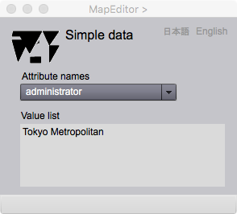

Simple Data Viewer
Simple data is a data following the data type called simple data type. In gittok, boolean (Bool), integer (Integer), real (Real) and character string (CharacterString) are simple data types. Simple Data Viewer shows a data talking such a type.
Simple Data Viewer

Figure 1. Displey of simple data
This viewer appears after selecting an attriute name followd by selection of a feature instance at the list in the ListViewer.
Fields
Attribute name
Attribute value is shown at the box of which title is the attribute name.
Buttons
日本語
今あなたが読んでいるドキュメントが表示されます．
English
You can read the tutorial written in English.